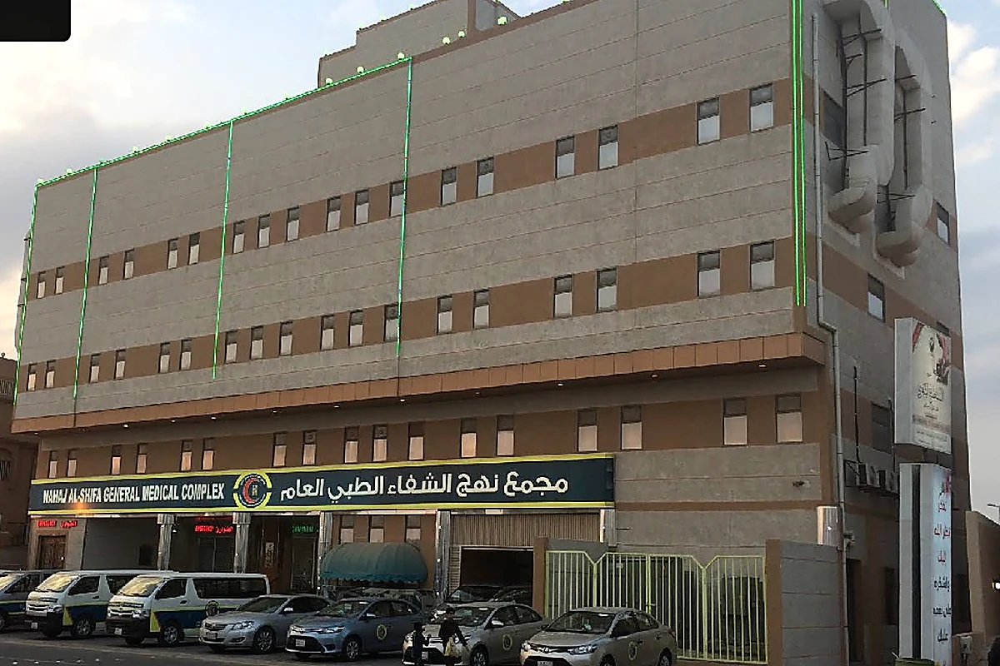
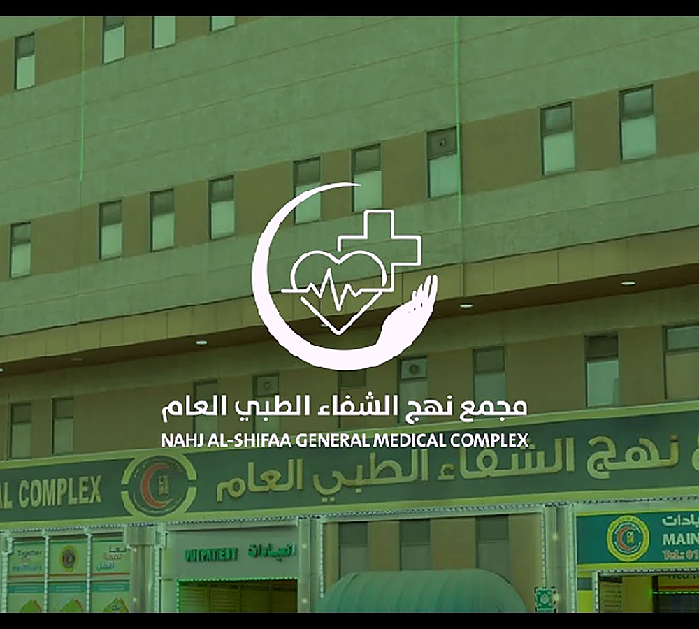
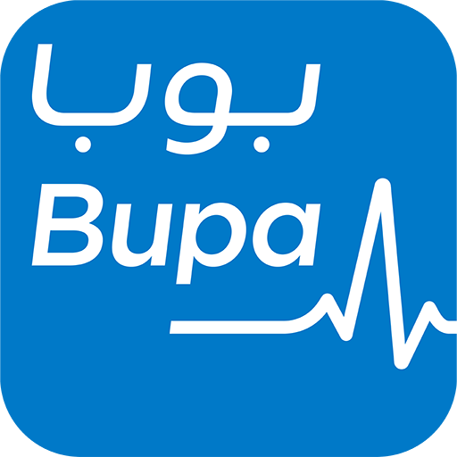
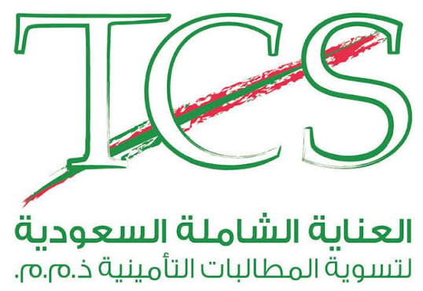
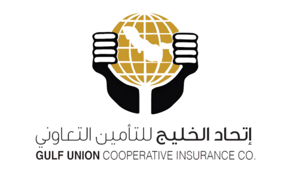

عيادة الطب العام
الرعاية الأولية، تقييم الحالات اليومية والمتابعة العامة.
في نهج الشفاء نجمع العيادات والخدمات التشخيصية وإجراءات التأمين وفحوصات الشركات في تجربة واحدة مصممة لتوفير وقتكم وتسهيل رحلتكم الصحية.


نخدم المراجعين من خلال فرعين في صفوى والخبر، مع باقة من العيادات الأساسية والتخصصية والخدمات المساندة. هدفنا أن يجد المراجع احتياجه الطبي في مكان واحد، بإجراءات منظمة وتواصل واضح من لحظة الاستقبال وحتى إتمام الخدمة.
فريق طبي مؤهلكوادر بخبرة عملية واهتمام بالتواصل مع المراجع.
تنظيم أسرعإجراءات ميسرة لخدمات العيادات والتأمين والفحوصات.
خدمات متكاملةعيادات، مختبر، أشعة، طوارئ وخدمات شركات في وجهة واحدة.
قسّمنا الخدمات إلى مجموعات واضحة لتصل إلى العيادة أو القسم المطلوب بسرعة، ويمكنك حجز الموعد مباشرة من بطاقة الخدمة.
نوفر خدمات رعاية منزلية مختارة لتسهيل المتابعة الصحية على المرضى وكبار السن ومن يصعب عليهم زيارة المجمع، مع تنسيق مسبق للخدمة والموعد حسب التوفر ونطاق التغطية.
الرعاية الجيدة ليست الكشف فقط. هي وضوح الإجراء، سهولة الوصول، سرعة الخدمة، وفريق يعرف كيف يجعل كل خطوة أبسط.
يساعد فريق التأمين في تسهيل إجراءات المراجعة والتحقق من التغطية وفق وثيقة العميل وموافقة شركة التأمين عند الحاجة.

بوبا العربية ولاء للتأمين
ولاء للتأمين ملاذ للتأمين
ملاذ للتأمين
العناية الشاملة السعودية
اتحاد الخليج الراجحي تكافلولاء للتأمينملاذ للتأمينالراجحي تكافل
الراجحي تكافلولاء للتأمينملاذ للتأمينالراجحي تكافل* تعتمد التغطية الطبية على وثيقة التأمين وفئتها وموافقة شركة التأمين عند الحاجة.
نوفر خيارات للتعاقدات المباشرة وفحوصات الموظفين والعمالة، مع نقطة تواصل واضحة وإجراءات يمكن تنسيقها وفق احتياج المنشأة.
موقعان في المنطقة الشرقية لتسهيل الوصول إلى خدمات نهج الشفاء.
للاستفسارات الطبية، التأمين أو خدمات الشركات، تواصل معنا وسنوجهك إلى القسم المناسب.
اختر نوع الطلب وأدخل البيانات الأساسية. سنجهز رسالة واتساب للفرع المختار لتراجعها قبل الإرسال.